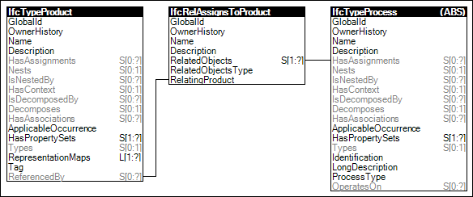

Link to this page
Link to this pageProduct types may have assignments indicating re-usable process types for which occurrences may operate on occurrences of the product type. An example of such assignment is a task type for placing concrete in slabs on grade.
Figure 75 illustrates an instance diagram.
 |
Figure 75 — Product Type Assignment |